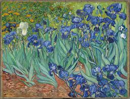

This month's selection: Irises by Vincent Van Gogh
The Artist
Vincent van Gogh (1853–1890)was a Dutch Post-Impressionist painter whose emotionally charged works and
innovative techniques left an indelible mark on the art world. Born in Zundert, Netherlands, van Gogh initially
pursued careers in ministry and art dealing before dedicating himself to painting in his late twenties. His art,
characterized by bold colors, dynamic brushstrokes, and a deeply personal style, reflects both his passion for
the natural world and his struggles with mental health.
During his brief but prolific career, van Gogh created over 2,000 artworks, including celebrated masterpieces
such as ""Starry Night", "Sunflowers", and "The Bedroom". Despite his brilliance, he lived in poverty, sold only
one painting during his lifetime, and died at 37, under circumstances still debated. Posthumously, van Gogh
gained recognition as one of the greatest and most influential artists in history, his work symbolizing the
transformative power of creativity and perseverance.
This graph shows Van Gogh's life through the self-portraits he painted. You can click on each portrait to learn
more about it.
The Piece
"Irises" (1889) is one of Vincent van Gogh’s most celebrated paintings, known for its vibrant color palette and
expressive brushwork. Created during his time at the Saint-Paul-de-Mausole asylum in Saint-Rémy-de-Provence, the
piece features a lush cluster of irises, their vivid blues and purples contrasting beautifully with the green and
yellow background. The painting is a remarkable example of van Gogh's ability to infuse life and emotion into the
natural world, showcasing his mastery of color and texture. "Irises" is also notable for its sense of movement, with
each flower appearing to almost pulse with energy. This work, painted at a time when van Gogh was grappling with
mental health challenges, represents his deep connection to nature and his unwavering creative spirit. Today, it is
regarded as one of his masterpieces, held in the collection of the J. Paul Getty Museum.

Reading Nook
This month's selection: Little Women by Louisa May Alcott
The Author
Louisa May Alcott (1832–1888) was an American author best known for her classic novel "Little Women" (1868),
which has captivated readers for generations with its heartfelt depiction of family life and the coming-of-age
experiences of four sisters. Born in Germantown, Pennsylvania, and raised in Concord, Massachusetts, Alcott grew
up in a progressive, intellectual household influenced by transcendentalist thinkers like Ralph Waldo Emerson
and Henry David Thoreau.
Alcott's life was shaped by financial struggles, leading her to work as a teacher, seamstress, and writer to
support her family. She published under various pseudonyms before achieving literary fame. Her works often
explored themes of gender roles, social justice, and independence, reflecting her advocacy for women's rights
and abolition.
Beyond her fiction, Alcott served as a nurse during the Civil War, an experience she chronicled in "Hospital
Sketches". A prolific writer, she continued to publish novels, short stories, and poetry throughout her career.
Alcott remained unmarried, dedicating herself to her family and literary pursuits until her death at 55. Her
legacy endures as a pioneer of women's literature and a voice of moral and creative resilience.
The Novel
"Little Women" by Louisa May Alcott is a timeless coming-of-age novel that follows the lives of the four
March sisters—Meg, Jo, Beth, and Amy—as they navigate the challenges and joys of growing up in Civil War-era New
England. Through trials of poverty, personal ambition, love, and loss, the sisters each embark on a journey of
self-discovery, learning the importance of family, resilience, and staying true to one's values. At the heart of
the story is Jo, a fiercely independent aspiring writer who struggles to balance her dreams with societal
expectations. Filled with humor, heartache, and enduring wisdom, "Little Women" explores themes of sisterhood,
individuality, and the pursuit of happiness, making it a beloved classic that resonates with readers of all
ages.
The novel is also a rich portrayal of the social constraints and opportunities of its time, offering a nuanced
view of women's roles in a rapidly changing world. Each sister represents different approaches to life—Meg's
desire for domesticity, Jo's yearning for independence, Beth's quiet selflessness, and Amy's artistic
ambition — creating a dynamic exploration of personal growth. Alcott weaves these diverse perspectives into a
touching narrative that celebrates love, sacrifice, and the enduring bond of family. Whether read for its
memorable characters or its heartfelt lessons, "Little Women" remains a literary treasure that continues to
inspire.
The Legacy
The enduring appeal of "Little Women" has inspired numerous adaptations across various media, each offering a
fresh interpretation of Louisa May Alcott’s beloved novel. Film versions date back to the silent era, with
notable renditions including George Cukor’s 1933 classic starring Katharine Hepburn as Jo, and the 1949
Technicolor adaptation with June Allyson. Gillian Armstrong’s 1994 film, featuring Winona Ryder, is praised for
its emotional depth and faithfulness to the text, while Greta Gerwig’s 2019 version reimagines the narrative
structure, blending modern sensibilities with period authenticity. Beyond film, "Little Women" has been adapted
into television series, stage plays, musicals, and even anime, each highlighting unique aspects of the March
sisters’ story. These adaptations underscore the novel’s timeless themes of family, ambition, and
self-discovery, allowing it to resonate with audiences across generations and cultures.
Here's a clip from the 2019 film. In this scene, Jo is proposed to by Laurie, her closest friend.